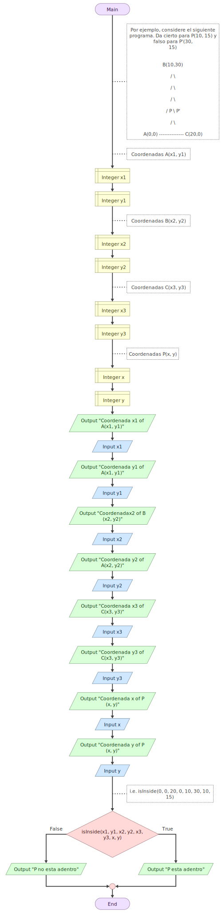
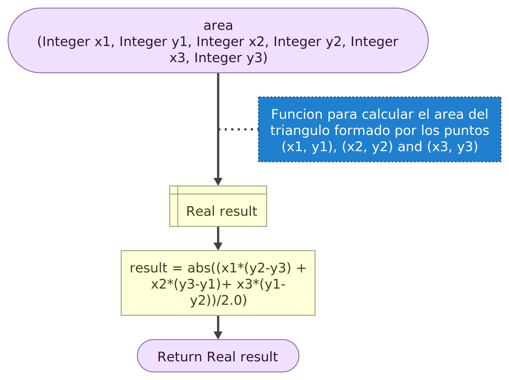
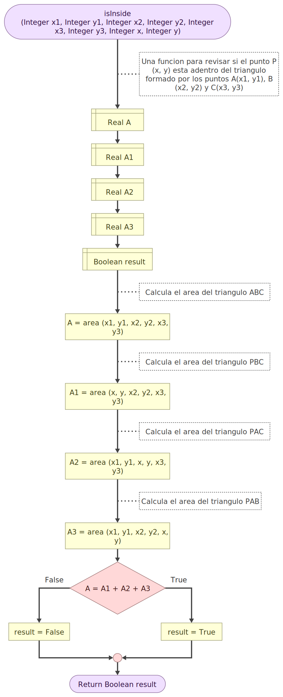
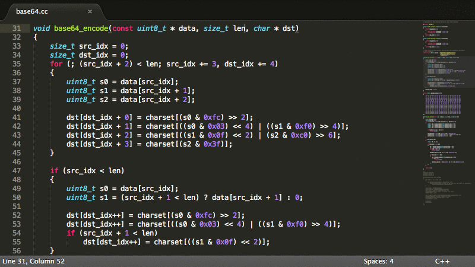

Actividad de GeoGebra
Utilización de la Fórmula de Herón, cálculo del área de un triángulo. Las distancias entre puntos se calculan aplicando el Teorema de Pitágoras
Utilización de la Fórmula de Herón, cálculo del área de un triángulo. Las distancias entre puntos se calculan aplicando el Teorema de Pitágoras
Demostración de la Fórmula de Herón
Utilizando Flowgorithm, según documentación y ejemplos

La herramienta Flowgorithm entre muchas más ventajas, nos proporciona el código que implementa el programa en diferentes lenguajes,
import java.util.*;
import java.lang.Math;
class Program {
private static Scanner input = new Scanner(System.in);
public static void main(String[] args) {
/* Por ejemplo, considere el siguiente programa. Da cierto para P(10, 15) y falso para P'(30, 15)
B(10,30)
/ \
/ \
/ \
/ P \ P'
/ \
A(0,0) -------------- C(20,0) */
// Coordenadas A(x1, y1)
int x1;
int y1;
// Coordenadas B(x2, y2)
int x2;
int y2;
// Coordenadas C(x3, y3)
int x3;
int y3;
// Coordenadas P(x, y)
int x;
int y;
System.out.println("Coordenada x1 of A(x1, y1)");
x1 = input.nextInt();
System.out.println("Coordenada y1 of A(x1, y1)");
y1 = input.nextInt();
System.out.println("Coordenadax2 of B(x2, y2)");
x2 = input.nextInt();
System.out.println("Coordenada y2 of A(x2, y2)");
y2 = input.nextInt();
System.out.println("Coordenada x3 of C(x3, y3)");
x3 = input.nextInt();
System.out.println("Coordenada y3 of C(x3, y3)");
y3 = input.nextInt();
System.out.println("Coordenada x of P(x, y)");
x = input.nextInt();
System.out.println("Coordenada y of P(x, y)");
y = input.nextInt();
// i.e. isInside(0, 0, 20, 0, 10, 30, 10, 15)
if (isInside(x1, y1, x2, y2, x3, y3, x, y)) {
System.out.println("P esta adentro");
} else {
System.out.println("P no esta adentro");
}
}
public static double area(int x1, int y1, int x2, int y2, int x3, int y3) {
// Funcion para calcular el area del triangulo formado por los puntos (x1, y1), (x2, y2) and (x3, y3)
double result;
result = Math.abs((x1 * (y2 - y3) + x2 * (y3 - y1) + x3 * (y1 - y2)) / 2.0);
return result;
}
public static boolean isInside(int x1, int y1, int x2, int y2, int x3, int y3, int x, int y) {
// Una funcion para revisar si el punto P(x, y) esta adentro del triangulo formado por los puntos A(x1, y1), B(x2, y2) y C(x3, y3)
double a;
double a1;
double a2;
double a3;
boolean result;
// Calcula el area del triangulo ABC
a = area(x1, y1, x2, y2, x3, y3);
// Calcula el area del triangulo PBC
a1 = area(x, y, x2, y2, x3, y3);
// Calcula el area del triangulo PAC
a2 = area(x1, y1, x, y, x3, y3);
// Calcula el area del triangulo PAB
a3 = area(x1, y1, x2, y2, x, y);
if (a == a1 + a2 + a3) {
result = true;
} else {
result = false;
}
return result;
}
}
Obra publicada con Licencia Creative Commons Reconocimiento Compartir igual 4.0